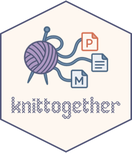

Using References
knittogether can preserve and round-trip citations between Word and Quarto. This page shows how to extract citations from Word and how to export documents with live Zotero citations.
Getting references from Word
Citations are likely to be added directly to Word documents, and it is unlikely that users will want to see Pandoc citation syntax in text, preferring more standard citation styles such as APA or Vancouver. Provided users use Zotero as a reference manager, it is easy to convert between these styles and create bibliography files.
Assuming a Word document exists with linked citations the following steps will result in a file that can be imported with working references:
- Install the BetterBibTeX extension for Zotero.
- Open the Word document. On the Zotero ribbon, click ‘Document Preferences’ and change the citation style to ‘Better BibTeX Citekeys’, available from the extension, and click ‘OK’.
- On the Zotero ribbon click ‘Unlink Citations’ and accept the warning. Note you may wish to save another copy of the document with linked citations for safety, though Quarto file produced by knittogether can produce a Word document with working citations.
- In Zotero itself export the references used into a bibliography. It is generally advisable to save references for a project to a dedicated library so that the bibliography contains only relevant references. To do this:
Right click on the library where the references are stored and click ‘Export Collection’,
Select ‘Better BibTeX’ from the drop down and click ‘OK’,
Save the .bib file in the relevant directory.
Getting references to Word
It is possible to export a .docx file with working Zotero references in, allowing users to edit references as they normally would and avoiding the risk of changes to references causing breakages. Three items are required for this, though the first two are likely to be present anyway.
example.bib: as covered in the “Getting references from Word” section.
style.csl: a file giving instructions on how to format citations and bibliographies available from Citation Style Language.
zotero.lua: a lua filter used by quarto to keep citations alive when exporting to Word. This must be included in the YAML of the qmd file as below
format:
docx: default
csl: elsevier-vancouver.csl
bibliography: _example.bib
filters:
- zotero.luaThis supports a full docx→markdown→docx cycle with live references throughout, though references still need to be unlinked before importing from docx to markdown.
Troubleshooting
Errors with citations can be caused by excess
\created during conversion. This typically occurs when a different markdown variant is used (e.g.convert(pandoc_args='--to=markdown_strict')). Settingclean(clean_citations = TRUE)should resolve these issues.If citations are not linked to a bibliography entry in the output, this is typically due to a mismatch between the keys imported from Word and the keys exported in the .bib file. This can occur sporadically and can be solved by editing the citekey field in Zotero for affected items.
vignette("extended-workflow")provides an example of extracting citations from Word.